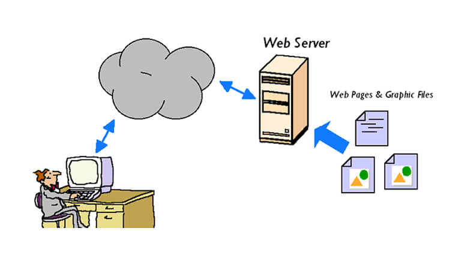

Web Server: The Backbone of the Internet
A web server is a powerful computer or software
application responsible for storing, processing, and delivering web
content to clients over the internet. When you visit a website, the web
server is what provides you with the data (web pages, images, videos,
etc.) that make up that site.
How a Web Server Works
The primary function of a web server is to respond to requests from a
web client (like a browser). Here’s a simplified
breakdown of the process:
-
Client Request: When you type a website’s URL in your
browser or click a link, your web client sends an HTTP request to the
server hosting that website.
-
Server Processing: The web server processes the
request, retrieves the requested resources (like HTML files, images,
etc.), and prepares them for delivery.
-
Response: The server sends back an HTTP response
containing the requested content. This response is then rendered by the
web client for you to view and interact with.

Types of Web Servers
-
Static Web Servers: These serve simple, unchanging
content like HTML pages, images, or downloadable files. The server
merely retrieves the files and sends them to the client without any
modification.
-
Dynamic Web Servers: These handle more complex
requests, generating content on-the-fly using programming languages like
PHP, Python, or Java. Dynamic servers are commonly used for sites that
change based on user input, like social media platforms or e-commerce
websites.
Key Components of a Web Server
-
Hardware: The physical machine that hosts the web
server software. It needs to have sufficient resources (CPU, RAM,
storage) to handle incoming requests efficiently. Many websites are
hosted on powerful, dedicated servers in data centers.
-
Software: The web server software processes client
requests and serves up the right content. Common web server software
includes:
-
Apache: One of the most widely used web servers
globally.
-
Nginx: Known for its speed and ability to handle
large volumes of traffic.
-
Microsoft Internet Information Services (IIS):
Commonly used on Windows servers.
-
HTTP Protocol: The web server relies on the HTTP
(Hypertext Transfer Protocol) to communicate with clients. It processes
HTTP requests from clients and returns
HTTP responses containing the requested resources or error
messages.
Web Server Functions
-
Hosting Websites: Web servers host websites by storing
all the necessary files (HTML, CSS, JavaScript, images) and delivering
them to users when requested.
-
Request Handling: The server processes incoming
requests from clients, retrieves the necessary resources, and sends them
back as HTTP responses. This includes handling GET and POST requests,
managing sessions, and more.
-
Security: Web servers play a key role in securing the
data they host. Using HTTPS, web servers encrypt data to ensure that
sensitive information, such as login credentials or payment details, is
transmitted securely between clients and servers.
-
Content Delivery: Web servers often work with CDNs
(Content Delivery Networks) to deliver large files (like videos or
images) more quickly by distributing them across multiple locations
around the world.
Web Server vs. Web Client
While a web client (like a browser) is responsible for
requesting content and displaying it to the user, the
web server is responsible for storing and serving that
content. The interaction between the two creates the seamless experience
we associate with the modern web.